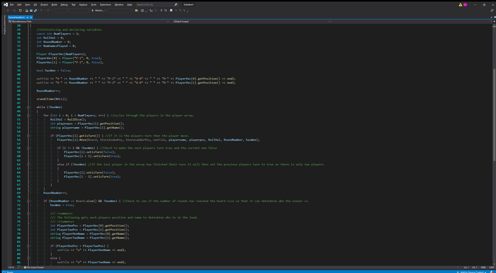

Aquascape was a game that I made with two other students, Jodi
Chapson and Kamogelo Maimela. It was a new experience to try and
make a polished game with other people. One of the important aspects
to this game was that it needed a save system as it is an idle game.
I focused on that a lot and learnt quite a bit about saving data. It
was also a lot of balancing due to the amount of data design. It was
really fun working with these designers and developers and I learnt
alot about being in a group with other people from planning and
source control on github.
To download a build it can be found here:
Itch.io Link
If you would like to see the Unity Project Folder it can be accessed
on github from this link:
Github Page Link
This is Blambo. He was created by my lecturer Steve in
second year and we pretty much had to rig, animate him and paint him.
I'm not much of an artist but I really enjoyed this 3D modelling course. It was really interesting
to see how 3D models are made for games. So much so that I would like to improve upon my skills in 3D modelling
and try other stuff and work on stuff such as rigging and animating.
If you would like to see the blender file it can be accessed here:
Github Page Link
I made this game called "The Getaway" and this was
during lockdown in 2020. It had been a few months and I decided that I would make
a game where someone could go around the little town that I had made and talk to someone
"outside" in this virtual world. I made it friendly and comical there was even a zombie that you could talk to.
This was the very first 3D game that I had made. It was a lot of fun changing from 2D and
I felt that the extra dimension really allowed me try and immerse the player in a world with nothing to worry about. It was also
a learning curve. I learnt just how long baking light can take and manually placing meshes in the game took long. However I was quite proud
of what I had done for it being my first 3D game.
To download a build of the game it can be found here:
Github page Link

In second year I took software development and we had to
make a snakes and ladder game in the console. The idea was simple. Simulate two players playing and output their dice roll
and where they moved to according if they landed on a snake, ladder or just a normal space. We used C++ to make this and I
wanted to make sure I used object orientating programming methods to the best of my ability.
I learnt a lot about reading data in from text files, looping with vectors (dynamic arrays),
game loop logic, and project management.
Finally this website is my final portfolio piece. I have learnt a metric ton of new skills.
HTML, CSS, JavaScript and reading external libarraies methods and implementing them. It has been a lot of fun trying to put what is
in my head onto an HTML page. If you would like to see my journey with this website head over to the blogs section and checkout
my critical reflection on my own UI and UX as well as an overall critical reflection on the site and using an external JavaScript
library to make animations easy.